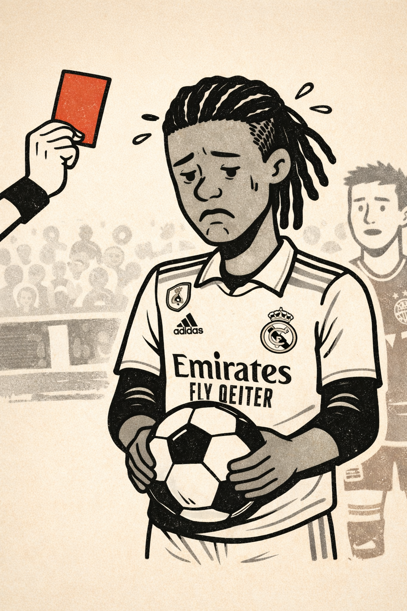

Camavinga y el valle inquietante
Se dice que cuando las carabelas de Colón aparecieron frente a la costa del Nuevo Mundo, los nativos bahameños no pudieron ver los barcos acercarse, porque su cerebro no estaba preparado para procesar algo que ni siquiera podían imaginar.
Algo así me sucedió el miércoles. Lo diré sin paños calientes: ¡le robaron al Madrid! ¿El cazador cazado?
Experimenté esa misma sensación perturbadora que cuando Yolanda me dice: «Es verdad, llevabas razón. Lo siento». O cuando entras en una ferretería de barrio y te tratan con respeto. Es raro.
¡Raro! Como que le roben al Madrid. ¿El timador timado?
Llaman valle inquietante a ese fenómeno que produce desasosiego al observar algo que parece real, pero no lo es del todo. Como si mañana me despertase y encontrase a los hermanos Casas jugando para el Athletic y a los hermanos Williams rodando películas malas… y nadie, excepto yo, notase la diferencia. Perturbador.
Vaya por delante que la expulsión de Camavinga me parece injusta. Pero no debió impedir el saque de falta. Como tampoco ayudó que Pubill cogiera el balón con la mano, ni las jugadas de Cubarsí o Eric García. Todos compraron papeletas.
Hace unos días, Estados Unidos decretó el bloqueo del estrecho de Ormuz. El martes, un barco chino cargado de metanol cruzó el estrecho ante la mirada de buques de guerra estadounidenses, que tuvieron que decidir entre recoger cable o hundir un barco chino.
La humanidad, una vez más, compró papeletas para su autodestrucción.
Por suerte, no pasó nada. No hubo escalada internacional. Nos hemos levantado en el mismo mundo que ayer. Bueno… en realidad no. Porque le robaron al Madrid.
